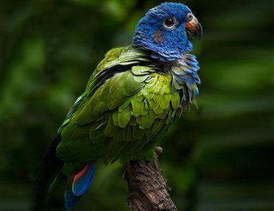
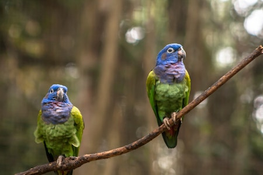

Wow! Based on your answers... You share similarities with the Blue-Headed Pionus (Pionus menstruus)

The Blue-headed Pionus is a very beautiful and easygoing bird. They are known to be great pets for many people, but they are not the best pets for everyone. Though they are charming and affectionate, they may not be as cuddly as other parrots. If raised with respectful interactions and consistent one-on-one interactions, then maybe the Blue-headed pionus would be more open and affectionate to their guardian, but this requires spending a great deal of time with them. Like the Blue-headed Pionus, you are an easygoing, charming and affectionate person, but this affection is towards the people you are closest and most comfortable with.
Click on Ceasar to Restart!